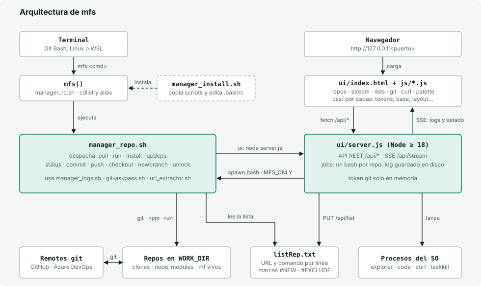
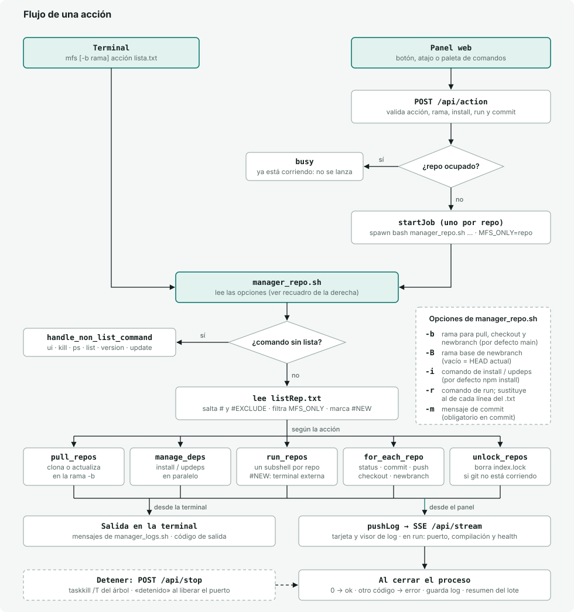
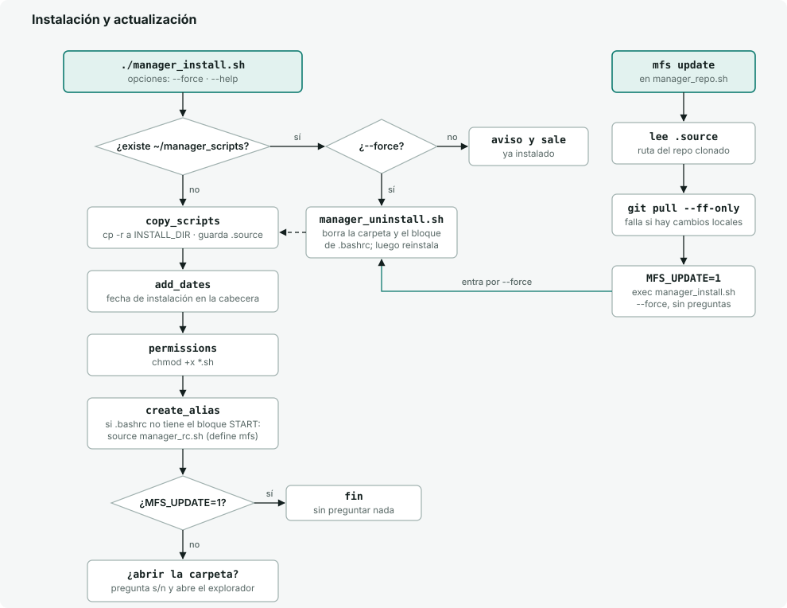
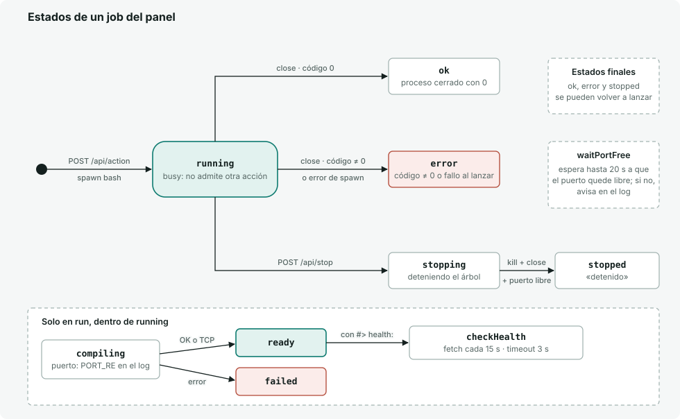
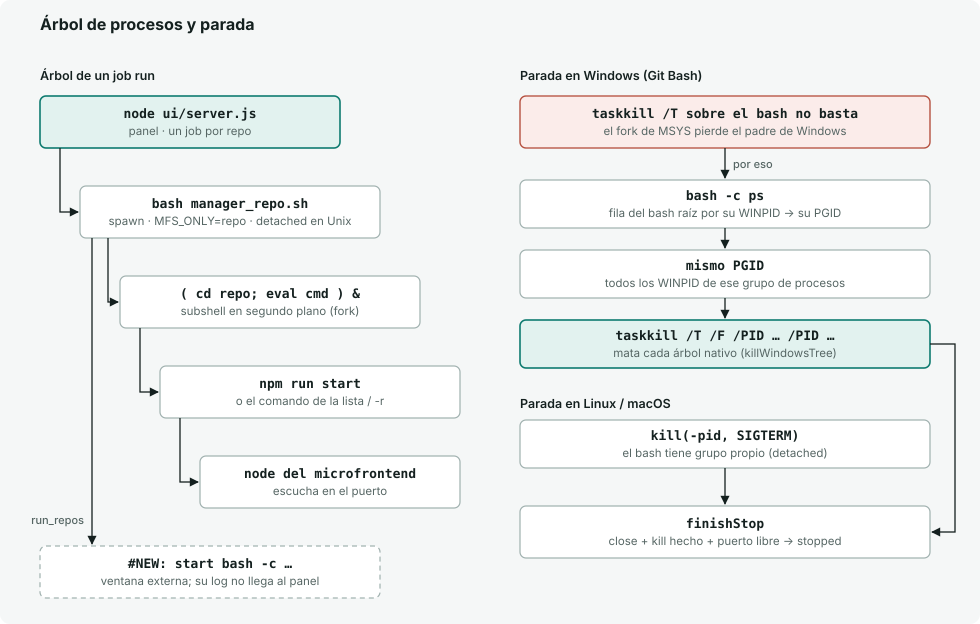
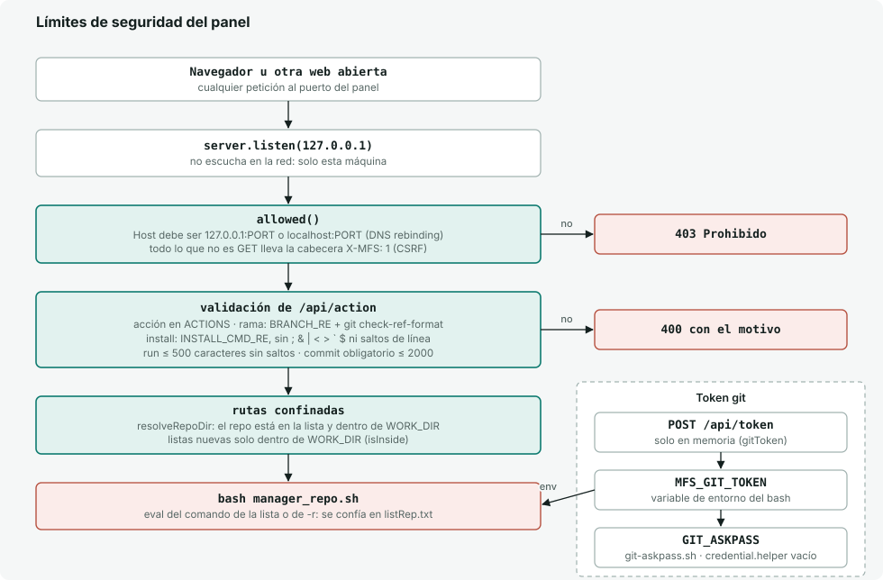
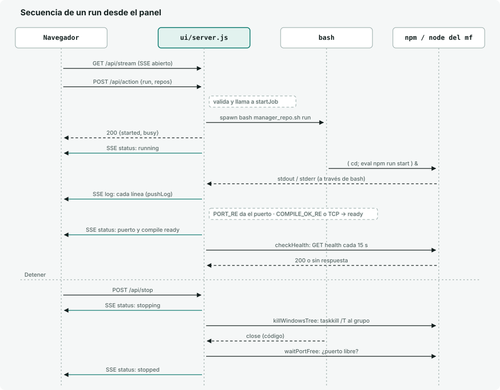

Cómo está montado mfs
Siete vistas del mismo sistema, de lo general a lo concreto. Cada diagrama es un SVG de esta carpeta. Todos los nombres son archivos, rutas, funciones o variables reales de Manager_install/.
Arquitectura de mfs
El núcleo es manager_repo.sh. La terminal llega a él por la función mfs. El panel es opcional: mfs ui arranca server.js, que vuelve a llamar a manager_repo.sh una vez por repo.

Flujo de una acción
La terminal y el panel llegan al mismo script. El panel además valida la petición, lanza un proceso por repo con MFS_ONLY y lleva la salida al navegador en directo.

Instalación y actualización
El instalador copia todo Manager_install/ a ~/manager_scripts y añade a .bashrc un bloque que carga manager_rc.sh. mfs update reutiliza la rama --force sin hacer preguntas.

Estados de un job del panel
Cada tarjeta del panel es un job de server.js. Mientras está en running o stopping no admite otra acción. En run se siguen además la compilación y el health check.

Árbol de procesos y parada
Es la parte más delicada. En Git Bash los subshells se crean con fork y pierden el padre de Windows, así que taskkill /T sobre el bash no llega a npm ni a node. El panel busca el grupo de procesos de MSYS y mata cada árbol por separado.

Límites de seguridad del panel
El panel ejecuta comandos en tu máquina, así que cada petición pasa por varias capas antes de llegar a bash. Lo que no protege: los comandos de listRep.txt y de -r se ejecutan con eval, así que hay que confiar en la lista.

Secuencia de un run desde el panel
Un run de principio a fin. Las flechas verdes son eventos SSE. El navegador no pregunta por el estado: todo le llega por /api/stream.
